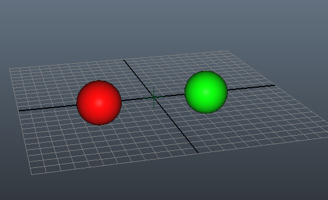

Using the InlineDrawing extension¶
バージョン 1.12.0 で追加.
Inline Drawing can be used directly without any modification for OpenGL rendering. You can also extend it for other renderers by implementing against the extension’s KL interfaces. See the KL types shipped with the extension prefixed with OGL for reference code.
To use the InlineDrawing in DCC integrations you can simply instantiate the DrawingHandle (object) object. You should store the DrawingHandle (object) on a port within the DCC. For example:
require InlineDrawing;
operator myDrawOp(io DrawingHandle handle) {
InlineDrawing draw = handle.getDrawing();
}
Once that’s done you can define shaders. Shaders can be used for a series of materials, so you’ll only need one flat shader for example for anything rendered with it. Shaders can be registered by name, but usually you’ll want to use the same shader object for anything utilizing a surface shader, for example.
// create a surface shader
InlineShader shader = draw.registerShader(OGLSurfaceShader());
Now you can build the scene’s transforms. This is optional, of course you can draw shapes as well just using the draw’s root transform.
// create a small scene hierarchy
InlineTransform rootTransform = handle.getRootTransform();
StaticInlineTransform childA('childA', Xfo(Vec3(-5, 0, 0)));
StaticInlineTransform childB('childB', Xfo(Vec3(5, 0, 0)));
rootTransform.addChild(childA);
rootTransform.addChild(childB);
After some transforms have been defined you can define some shapes.
// create a shape containing a sphere
InlineDebugShape shape = draw.getShape('debug');
if(shape == null) {
shape = InlineDebugShape('debug');
draw.registerShape(shape);
shape.drawTrianglesSphere(Xfo(), 2.0, 12);
}
To draw shapes with given transforms, we can now define materials.
// create some materials
InlineMaterial red = shader.getOrCreateMaterial('red');
InlineMaterial green = shader.getOrCreateMaterial('green');
red.setUniform('u_diffuseColor', Color(1.0, 0.0, 0.0));
green.setUniform('u_diffuseColor', Color(0.0, 1.0, 0.0));
Finally we can push some instances into the materials, defining a combination of transforms and shapes. Note that you can also set this up the opposite way, by calling addMaterial on the InlineInstance (object).
// create some instances
red.addInstance(SimpleInlineInstance('redSphere', childA, shape));
green.addInstance(SimpleInlineInstance('greenSphere', childB, shape));
In Maya, this results in the following:
{kind=link}
If you want to render the same shape several times, there are two approaches. Either you create an inline transform for each instance, or you add Statictiple Xfo (struct) values into the transform. This is done using the staticinlinetransform‘s pushLocalXfo method.
// add some xfo values to the first transform
childA.pushLocalXfo(Xfo(Vec3(-5, 5, 0)));
childA.pushLocalXfo(Xfo(Vec3(-5, 10, 0)));
This then results in the red sphere being drawn three times.

Here’s the full source code once more (for easy testing in Maya, for example):
require InlineDrawing;
operator myDrawOp(io DrawingHandle handle) {
InlineDrawing draw = handle.getDrawing();
// create a surface shader
InlineShader shader = draw.registerShader(OGLSurfaceShader());
// create a small scene hierarchy
InlineTransform rootTransform = handle.getRootTransform();
StaticInlineTransform childA('childA', Xfo(Vec3(-5, 0, 0)));
StaticInlineTransform childB('childB', Xfo(Vec3(5, 0, 0)));
rootTransform.addChild(childA);
rootTransform.addChild(childB);
// create a shape containing a sphere
InlineDebugShape shape = draw.getShape('debug');
if(shape == null) {
shape = InlineDebugShape('debug');
draw.registerShape(shape);
shape.drawTrianglesSphere(Xfo(), 2.0, 12);
}
// create some materials
InlineMaterial red = shader.getOrCreateMaterial('red');
InlineMaterial green = shader.getOrCreateMaterial('green');
red.setUniform('u_diffuseColor', Color(1.0, 0.0, 0.0));
green.setUniform('u_diffuseColor', Color(0.0, 1.0, 0.0));
// create some instances
red.addInstance(SimpleInlineInstance('redSphere', childA, shape));
green.addInstance(SimpleInlineInstance('greenSphere', childB, shape));
// add some xfo values to the first transform
childA.pushLocalXfo(Xfo(Vec3(-5, 5, 0)));
childA.pushLocalXfo(Xfo(Vec3(-5, 10, 0)));
}
This example uses the InlineDebugShape (object), but of course you can also use the more efficient shapes such as the InlinePointsShape (object) for large point clouds, InlineLinesShape (object) for rendering lines or fur, InlineMeshShape (object) for rendering polygons. Each of these takes the corresponding geometry object as the constructor argument. The corresponding shape adaptors version the used OpenGL buffers against the geometry attributes, so if you deform the original mesh, for example, the shape will automatically re-upload the positions and normals buffer to reflect the change. Please see each shape’s documentation page for a code sample.
Since all main elements of the InlineDrawing system are interfaces, you can extend it with your own custom shapes, custom shaders etc. Furthermore you can use the OGLInlineShader (object) directly in your KL code, which allows to edit the GLSL code within the KL code editor window. The OGLInlineShader (object) can drive the vertex and fragment code, but optionally also the geometry and tessellation code. For this the OGLInlineShader (object) provides methods to drive the code (for example setVertexCode, setFragmentCode, setGeometryCode etc). See the sample below for an alternative implementation of the flat shader.
InlineShader shader = OGLInlineShader(
'customFlat',
'
#version 150 //required for OSX support
uniform mat4 u_invViewMatrix;
uniform mat4 u_projection;
uniform mat4 u_modelMatrix;
in vec4 positions;
void main(){
gl_Position = u_projection * (u_invViewMatrix * (u_modelMatrix * positions));
}
', '
#version 150 //required for OSX support
uniform vec4 u_color;
out vec4 out_fragColor;
void main(){
out_fragColor = u_color;
}
');
shader.defineUniform(InlineUniform("u_invViewMatrix", Mat44()));
shader.defineUniform(InlineUniform("u_projection", Mat44()));
shader.defineUniform(InlineUniform("u_modelMatrix", Mat44()));
shader.defineUniform(InlineUniform('u_color', Color(1.0, 0.0, 0.0)));
shader.defineAttribute('positions', "vec3");